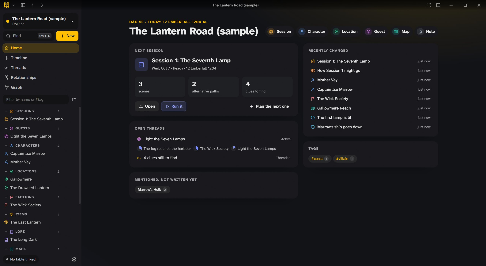
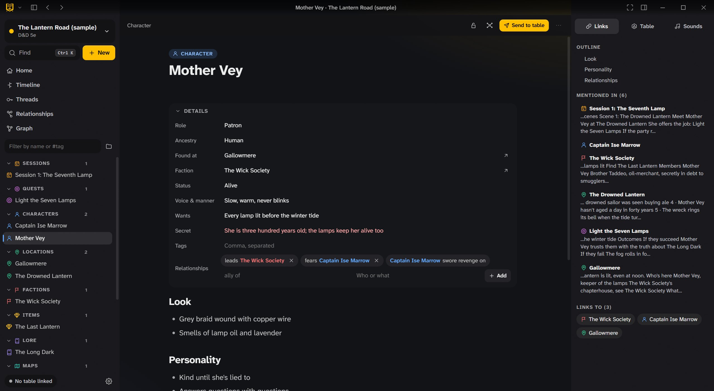
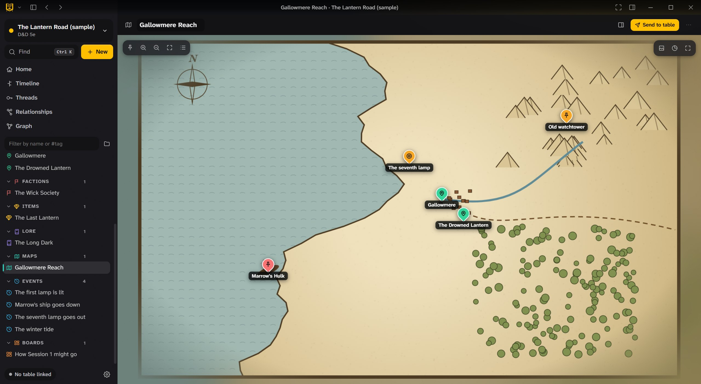
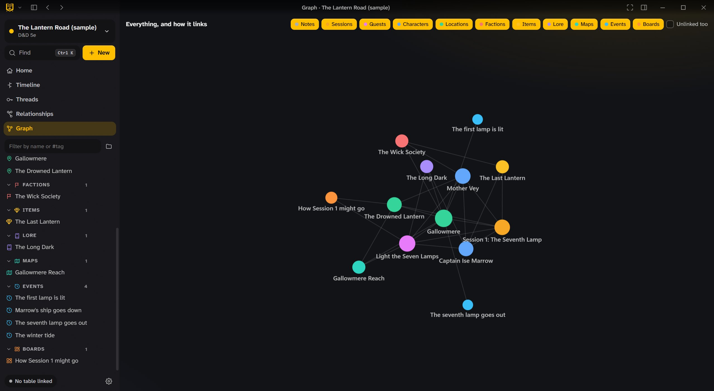
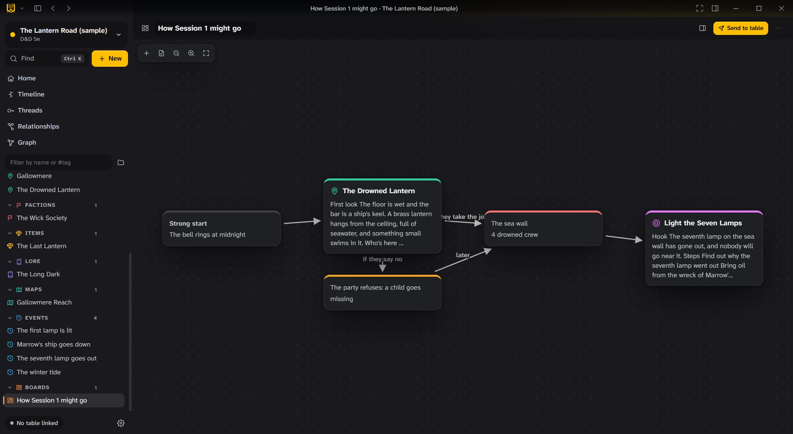
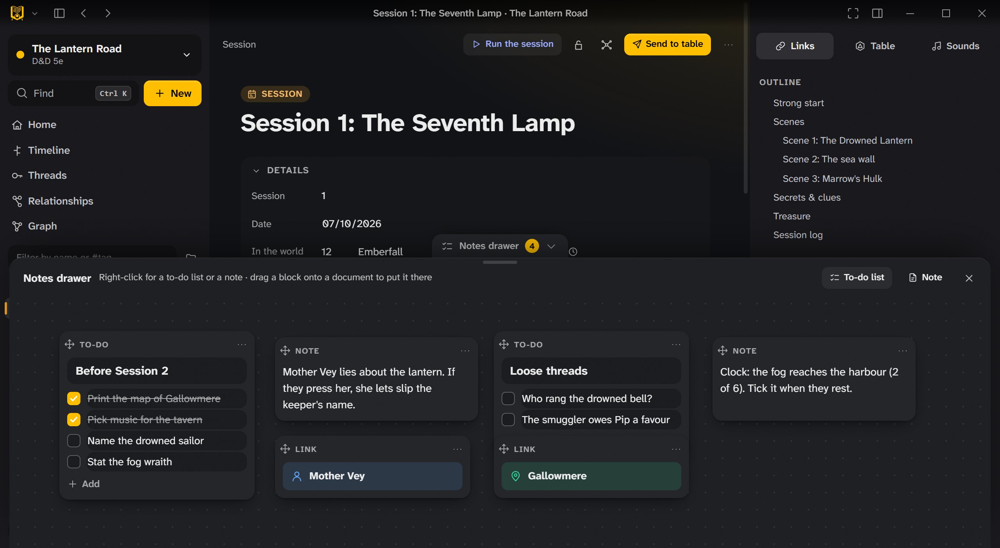
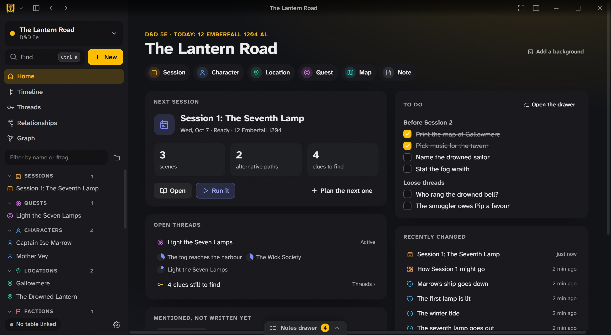
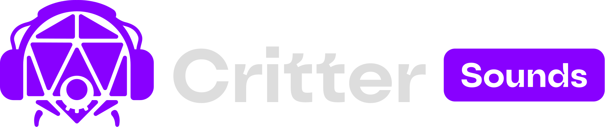

Your campaign, planned and ready to run.
A notebook for game masters. Plan sessions, write the world, draw maps, boards and mind maps, and bring it all to your Critter VTT table when you play.
Free and open source. Your campaigns stay on your computer as plain files.

A page for everything in your world.
Characters, locations, factions, quests, items, lore and events, each with its own fields, written in a visual editor and linked to each other as you type.
- Details for each kind of page: a character’s wants and secret, a location’s ruler, a quest’s steps.
- Links both ways: every page shows where it’s mentioned, and new names are suggested as you write.
- Relationships like “leads”, “fears” or “swore revenge on”, drawn as a graph.
- The rules from the same compendium as Critter VTT, linked into your pages.

Draw it, pin it, plan it.
Maps with pins for every place, boards for planning how a session might go, and mind maps for untangling a plot.
- Maps with pins that open their pages, and a scale.
- Boards for scenes and branches: what happens if they say yes, and if they say no.
- Timeline and calendar in your world’s own dates, with progress clocks.
- Threads and clues so you know what’s still open and what the party hasn’t found.

See how it all connects.
The graph shows every page and every link, coloured by kind. Filter it to the factions, or the people, and spot the threads you haven’t pulled yet.
- A graph of everything, or only what you pick.
- Home shows the next session, open threads, recent changes, and names mentioned but not written yet.
- Find anything with Ctrl+K.

From your notes to the table.
Link a campaign to your Critter VTT lobby, and send what you’ve prepared at the moment it matters.
- Send to the table notes, handouts, character and monster sheets, and scenes.
- Run a session with your plan beside you.
- Cue the music in Critter Sounds from your scene notes.
- Share with co-writers (encrypted), and give players their own view without your secrets.

A drawer for the loose ends.
The notes drawer slides up from the bottom of any page (Ctrl+J): a canvas for to-do lists, quick notes and links to your documents, beside whatever you’re writing.
- To-do lists, notes and links wherever you put them; right-click for something new, drag them around.
- Drag a block onto a document to put it there: a list becomes a checklist, a link a link.
- Open to-dos on Home, so nothing is forgotten before the next session.
- Saved as you type, like everything else in Critter Notes.


The little things that help.
A visual editor
Write like in a word processor; it’s kept as plain Markdown underneath.
Boards and mind maps
Cards and arrows for plans and plots.
Calendar and timeline
Your world’s calendar, with events on a timeline.
Random tables and encounters
Roll on your own tables, and build encounters from the compendium.
Your files
Campaigns are plain files on your computer, easy to back up.
Focus mode
Hide everything but the page, with a reading size and font of your own.
Three apps, one table.
Critter Notes sends what you prepared to Critter VTT, the table, and cues the music in Critter Sounds. All three connect through the same Homebase.
The free virtual tabletop: battle maps, 3D dice and sheets, in a browser or on Windows.
Take a look →
Music, sound pads and soundscapes, played live to your table, Discord or Fluxer.
Take a look →Plan sessions, write the world, draw maps and boards, and send it all to the table.
You’re hereGet Critter Notes.
For game masters. Your campaigns stay on your computer as plain files, and the app updates itself.
Plays with Critter VTT
The virtual tabletop your notes go to: free, in a browser or on Windows.
The installer isn’t code-signed yet, so Windows SmartScreen may warn the first time: choose More info › Run anyway. Every version and what changed is on the Releases page.